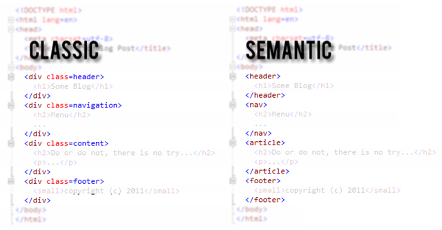
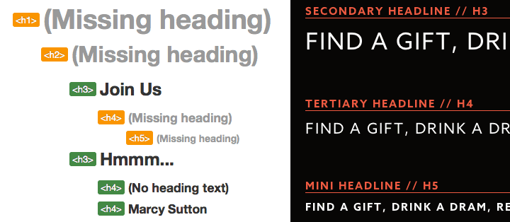

Hi, SmashingConf Whistler!
What if you couldn't:
- use a mouse
- see the screen
- perceive colors
- hear audio content
- do ski ballet
?
Web Accessibility
Everyone can perceive, understand, navigate, and interact with the Web, and they can contribute to the Web.
Accessibility is about
PEOPLE.
A Web for Everyone
Marcy Sutton, Developer @Substantial
Material Design Accessibility Engineer
Assumptions about users
- Disabled people travel.
- Disabled people cook.
- Disabled people work out.
- Disabled people take pictures.
- Disabled people drink whiskey.
Disabled people are
early adopters.
Web Components
- Custom elements
- Encapsulation
- Reinventing the web
- <div> soup
- Excuse me while I jump out a window
"Interactive" means something.
cursor: pointer;element.on('click')outline: none;
Enable the keyboard!
<core-item ng-click="nope()"></core-item>
<button ng-click="yep()"></button>
<paper-button role="button" tabIndex="0"
ng-click="woohoo()"
ng-keypress="woohoo()">
</paper-button>
"Semantic" means something.
Better Poly-mail Demo
Shred

Airlines
Scroll UI
Sass Focus & Touch Styles
Handling Focus
$scope.$watch('airportIsSelected', function(newValue){
if(newValue){
$scope.pickerIsVisible = true;
$('html,body').animate({
scrollTop: peoplePicker.offset().top
}, 600);
peoplePicker.find('button').first().focus();
$rootScope.$broadcast('statusUpdated', self.selectedAirport);
}
});
Whiskey

A11Y Concerns
- Headings
- Text alternatives
- Focus styles
- Focus management
Headings
Text Alternatives
Focus Styles
[tabIndex="0"] {
color: $linkColor;
&:focus, &:hover {
background-color: $linkColor;
color: $linkActiveColor;
}
}
Managing focus
class App.FocusManager
constructor: ->
$('body').on 'focusin', (e) =>
@oldFocus = $(e.target)
App.bind 'rendered', (e) =>
return unless @oldFocus
@_focusById() if @oldFocus.data('focus-id')
_focusById: ->
focusId = @oldFocus.data('focus-id')
newFocus = $("[data-focus-id=#{focusId}]")
MyApp.focus(newFocus) if newFocus
Interactive Tiles
Tools
- Your Keyboard
- Android: TalkBack
- iOS: VoiceOver
- Mac: VoiceOver
- Windows: JAWS, WindowEyes, NVDA